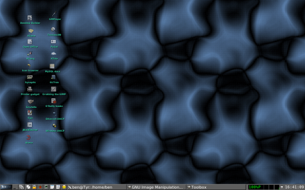
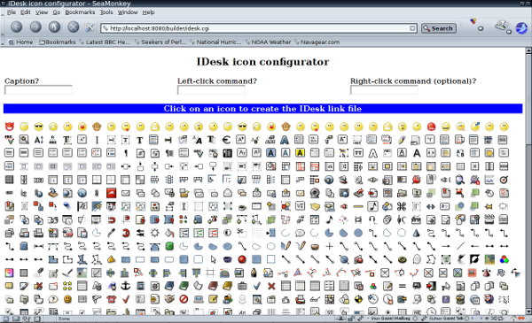
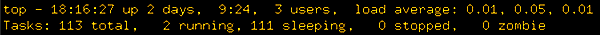

The Unbearable Lightness of Desktops: IceWM and idesk
By Ben Okopnik
For the last couple of years, I've been running Ubuntu on my HP Pavillion zv6000 laptop (AMD Athlon™ 64 Processor, 374MB RAM, 40GB HD) - and have often found myself grousing at the grindingly slow performance, particularly when I wanted to run any heavy-duty applications. Until recently, I took it for granted that running anything like GIMP or even Firefox meant essentially constant swapping, huge latency, stuttering in my audio programs, skipped frames in video apps... in short, behavior that I would have expected out of some ancient decrepit piece of hardware rather than a 64-bit powerhouse that this laptop is supposed to be. Even though I got more or less used to it, there was always that bit of buried outrage that one of the friendliest Linux distros out there consigned me to a life of crawling while everyone else was sprinting. If a Windows user ever asked me "so, is Linux faster than Windows?", I'd have to point them to other people's machines - since my own was anything but an effective demonstrator. It was time, and past time, to put some effort into resolving the situation.
Sometimes, it takes a particular event to push us out of a rut; in my case, the trigger happened when I recently attended the Ubuntu Bug Jam at SCaLE (the Southern California Linux Expo.) The local Ubuntu team was comprised of a very nice group of helpful folks who helped me out with an odd question that I had regarding font viewers under Ubuntu, and who got me thinking of other problems that I wanted to address - including this one. My questions about speeding up my machine didn't produce any definitive answers, but the process did get me thinking in this direction - which was enough of a start. Thanks, guys!
Back to the Future, or Forward to the Past?
The more I thought about it, the more I recalled my old (previous to Ubuntu) setup: I was running Debian, with IceWM as the window manager and 'idesk' as an icon manager. The combination was highly flexible, very powerful, and gave me everything that I wanted in a GUI (interestingly enough, I found both GNOME and KDE lacking in several respects - even though they had much more functionality in other ways.)
Installing both of the above under Ubuntu was trivially simple:
sudo apt-get install icewm idesk
...which, of course, produced no visible result. Unsurprising, since GNOME was still running; fortunately, the GNOME display manager (GDM) provides us with a nice mechanism for changing WMs. All you have to do is restart X - whether by logging out or by hitting the magic 'Ctrl-Alt-X' key combo which kills the X server - and select 'Options/Select session'. This allows you to start X with a different window manager, and to make that change temporary or permanent. Initially, I used the "Just for this session" version, but once I had everything configured the way I wanted it, I made the change permanent.
Configuring IceWM
Like any properly-written application, IceWM will run just fine without any special configuration - but configuring it "kicks it up to the next level". From a very basic, boring desktop with minimal functionality, it can quickly become a sleek, beautiful, responsive environment for any kind of GUI operations that you can envision for a GUI manager. Now, I'll be honest: I've looked at the IceWM GUI configurator (icemc) and... was not impressed. No insult to the people who put it together, but I find that a plain text editor works better, at least for me. The syntax of the various toolbar and key configuration files is so simple and intuitive, especially if you copy and edit the sample files that come with IceWM, that there's no reason to add another layer of complexity between you and the results you want.
Some of the most basic things - e.g., choosing a theme or a focus method - are built right into the IceWM menus. As an example, in this image, I've replaced IceWM's basic greenish-gray background with a snappy-looking "Area51" theme just by choosing it from the menu (available either from the button in the lower left corner or right-clicking on the desktop):

IceWM: Area51 theme
I actually recommend choosing a theme for yourself before you start hacking the rest of the settings - this will create a ~/.icewm directory and place a 'theme' file in it containing the theme you've chosen. Since that's what we need to do anyway, this saves us a bit of work.
By default, IceWM will read the configuration files in /etc/X11/icewm. If you're going to tweak a lot of things, I'd suggest copying the files from there as well as from /usr/share/icewm and modifying them: the format is rather obvious in all cases, and it's a lot easier to change what already exists than to try to remember something new and unfamiliar. In practice, at least for me, this comes down to modifying only three files: 'preferences', 'toolbar', and 'keys'. The first one modifies the default preferences for how IceWM itself acts and runs, the second determines the mini-icons on the toolbar, and the third - in some ways the most useful - allows you to define key combinations which will execute the programs that you set for them. This last was, in fact, the functionality that I found either missing or badly restricted in other WMs. Again, since the default files are heavily commented, and the default state for each setting is shown, tweaking these is very easy. Let's start with ~/.icewm/preferences; please note that I've deleted all but the prefs that I want to be different from the default setting.
# Support mouse wheel UseMouseWheel=1 # 0/1 # Clock Time format (strftime format string) TimeFormat="%T" # Show APM/ACPI/Battery/Power status monitor on task bar TaskBarShowAPMStatus=1 # 0/1 # Beep when new mail arrives TaskBarMailboxStatusBeepOnNewMail=1 # 0/1 # Count messages in mailbox TaskBarMailboxStatusCountMessages=1 # 0/1 # Execute taskbar applet commands (like MailCommand, ClockCommand, ...) on single click TaskBarLaunchOnSingleClick=0 # 0/1 # Icon search path (colon separated) IconPath="/home/ben/Pics/icons:/usr/share/icons:/usr/share/pixmaps" # Command to run on mailbox MailCommand="/usr/local/bin/rmutt" # Command to shutdown the system ShutdownCommand="/usr/bin/gksudo /sbin/halt" # Command to reboot the system RebootCommand="/usr/bin/gksudo /sbin/reboot" # Network device to show status for NetworkStatusDevice="ppp0 eth0 wlan0" # Workspace names WorkspaceNames=" 1 ", " 2 ", " 3 ", " 4 " # Show workspace switching buttons on task bar TaskBarShowWorkspaces=0 # 0/1
Hopefully, all of the above is clear enough; the names of the settings are pretty self-explanatory, and the comments make the rest of it obvious.
One of the things I decided not to set here, although the capability exists, is the desktop background. Instead, as you will see later in this article, I've left that piece to be handled by idesk because I prefer the way that it handles backgrounds - and it's nice to have that kind of choices.
Next, I set up the toolbar file. By default, it shows only two mini-icons: xterm and Mozilla. Since the toolbar is always visible no matter what windows may cover the desktop, this is a good place to put your "must-have" apps - and that's what I did, reserving the desktop for things that are less immediate.
prog "BackFlip" "kmultiple_16x16.xpm" /usr/local/bin/bkgr prog "Lock screen" "decrypted_16x16.xpm" /usr/bin/xlock -random prog "Mix" "music_32ndnote_16x16.xpm" /usr/bin/tkmixer prog "Firefox" "mozilla_16x16.xpm" /usr/bin/firefox-2 prog "JPilot" "pda_black_16x16.xpm" /usr/bin/jpilot prog "Xcal" "spreadsheet_16x16.xpm" /usr/local/bin/Xcal prog "Snap" "image_16x16.xpm" /usr/local/bin/snap prog "Cell-up" "presence_online_16x16.xpm" /usr/local/bin/aircard-up
Again, we have a simple layout: the popup label for the icon, the icon image, and the program to run. Here, I made use of a number of scripts that I've written over the years as well as standard Linux programs: "bkgr" for changing the backgrounds at will, "Xcal" to display a convenient and simple year-long calendar that I got from a 2-cent tip here in LG, and so on. The icons that I used are located in my ~/Pics/icons directory - but IceWM knows about that because I set the "IconPath" variable in the 'preferences' file, above. No problem at all - except that I had to consult my wife, the resident graphics designer, about the choice of icons. Oh well - we all have our strengths...
Last, I set up the 'keys' file:
key "Alt+Ctrl+m" /usr/local/bin/rmutt key "Alt+Ctrl+l" /usr/bin/xterm -e lynx key "Alt+Ctrl+x" /usr/bin/xterm key "Alt+Ctrl+g" /usr/local/bin/urlgrab key "Alt+Ctrl+u" /usr/local/bin/urlsee key "Alt+Ctrl+k" /usr/bin/xkill key "Alt+Ctrl+a" /usr/local/bin/voladj -u key "Alt+Ctrl+z" /usr/local/bin/voladj -d
Again, obvious syntax and lots of scripts - 'rmutt' to set up and fire off my Mutt email reader, 'urlgrab' to run "wget" on a currently-highlighted URL (via 'xclip'), 'urlsee' to browse a URL, and 'voladj' to adjust the audio volume on the system. Few other window managers make it this easy!
One of the really nice bits of running IceWM is the ability to test its configuration quickly. Most of the changes - as far as I can tell, everything except 'preferences' - happen immediately, as soon as you save the relevant file; testing the changes in 'preferences' simply requires selecting 'Window Managers/IceWM' on the menu, which restarts IceWM (a matter of two seconds or so.) Instant feedback is great - especially if you're used to having to restart GNOME or KDE, which takes a long time by comparison.
Configuring idesk
Now that IceWM is up and running, you may decide that you want desktop icons as well. Frankly, I see a number of arguments against doing so: given the combination of the menu button (as well as right-clicking anywhere on the desktop, which brings up the same menu), the toolbar icons, and the fact that you can run programs by clicking the mail icon, the network monitors, the CPU monitor, and the clock, and considering that the desktop itself will be covered 99% of the time, it seems like gilding the lily. However, if that's what you want to do, then I suggest sticking with an equally lightweight option: idesk. This is a simple but capable icon manager; its only weak point, in my opinion, is the lack of easy configuration for its icon files - so, as is often the case, I've made up the lack by writing a bit of code. This configurator is slightly clumsy with regard to setup, but works pretty well.
There are two parts to setting up idesk: you need to create a ~/.ideskrc file and the individual .lnk files in a directory called ~/.idesktop. Sample files for these can be copied from '/usr/share/idesk/default.lnk', but I'll make it even simpler than that (keep reading, and you'll see!) Everything that goes into those is well documented in /usr/share/idesk/README, but you don't actually need to go in there unless you run into problems.
To make all of the above easy, I used a combination of the 'thttpd' web server, a bit of CGI, and the Mozilla browser - along with some canned links. Here's all you need to do to make it work.
Setting up
First, make sure to install the 'thttpd' web server and the 'gnome-icon-theme' package. Next, copy the default .ideskrc file and create your .idesktop directory with a 'builder' directory under it:
sudo apt-get install thttpd gnome-icon-theme cp /usr/share/idesk/dot.ideskrc ~/.ideskrc mkdir -p ~/.idesktop/builder
Now, place the files from this tarball into the '~/.idesktop' directory. This will also create a symlink in '~/.idesktop/builder' called '24x24' that points to /usr/share/icons/gnome/24x24:
tar xvzf builder.tgz -C ~/.idesktop
At this point, you have the minimal setup necessary to run idesk. Start it from a terminal, watching for errors:
idesk
You'll probably see warnings when you do:
Idesk starting in :0.0 [idesk] Background's file not found. [idesk] Background's source not found.
These are not critical, but they make a good reminder: you may want to add a background image to ~/.ideskrc at this point (all of the following should be added at the end of the 'table Config' section.) You could specify either a Background.File: /absolute/path/to/image/file.ext or a Background.Source: /directory/with/images for a randomly-chosen background that changes every so often (Background.Delay: 5 would set it to every 5 minutes; the default is 0 - i.e., never changes - which would just give you a random image once per session.) You might also consider setting Background.Mode: MODE, which will modify how the images are displayed; the valid modes are Stretch, Scale, Center, Fit, and Mirror.
Once idesk is up and running, double-click the 'Desktop' icon that appears on your desktop; this will start 'thttpd', bring up a Mozilla browser, and show you the following interface:

The Builder interface
Simply enter the caption (i.e., the label which will show under the icon), the name of the program - preferably including its path - and click on an icon. Builder will create the .lnk file based on your choices and show you the contents; you can then return to Builder to create another icon. When you're done, just close the browser; this will also kill the web server. To see your new icons, you'll need to restart idesk; this simply requires double-clicking any of its icons with both mouse buttons. To edit a link file manually, you need to double-right-click its icon; running the program, as always, takes a double-left-click.
The Wrap-up
In this article, I've tried to present a cohesive setup for anyone interested in converting their default Ubuntu setup to a lighter, faster, sleeker configuration. Obviously, I can't guarantee any specific gains if you do this, but on my machine, I've gone from a CPU that was always showing a load of 1 or even slightly more while completely idle to one that acts as a Linux machine should:

'top' output: load averages with IceWM
No longer is running Mozilla a concern, nor do I see much (if any) swapping when I run GIMP, etc. In fact, for the first time ever on this machine, I've been able to install and run 'openarena' (a video-heavy first-person shooter) and have it actually work - no lag! - instead of chugging slowly one frame at a time. Applications open with unbelievable speed, and even flipping open an xterm feels like neck-snapping acceleration. For this happy camper, IceWM and idesk provide a comfortable, competent, and above all fast graphical environment for Linux. Give it a try!
Talkback: Discuss this article with The Answer Gang

Ben is the Editor-in-Chief for Linux Gazette and a member of The Answer Gang.
Ben was born in Moscow, Russia in 1962. He became interested in electricity at the tender age of six, promptly demonstrated it by sticking a fork into a socket and starting a fire, and has been falling down technological mineshafts ever since. He has been working with computers since the Elder Days, when they had to be built by soldering parts onto printed circuit boards and programs had to fit into 4k of memory (the recurring nightmares have almost faded, actually.)
His subsequent experiences include creating software in more than two dozen languages, network and database maintenance during the approach of a hurricane, writing articles for publications ranging from sailing magazines to technological journals, and teaching on a variety of topics ranging from Soviet weaponry and IBM hardware repair to Solaris and Linux administration, engineering, and programming. He also has the distinction of setting up the first Linux-based public access network in St. Georges, Bermuda as well as one of the first large-scale Linux-based mail servers in St. Thomas, USVI.
After a seven-year Atlantic/Caribbean cruise under sail and passages up and down the East coast of the US, he is currently anchored in northern Florida. His consulting business presents him with a variety of challenges such as teaching professional advancement courses for Sun Microsystems and providing Open Source solutions for local companies.
His current set of hobbies includes flying, yoga, martial arts,
motorcycles, writing, Roman history, and mangling playing
with his Ubuntu-based home network, in which he is ably assisted by his wife and son;
his Palm Pilot is crammed full of alarms, many of which contain exclamation
points.
He has been working with Linux since 1997, and credits it with his complete loss of interest in waging nuclear warfare on parts of the Pacific Northwest.